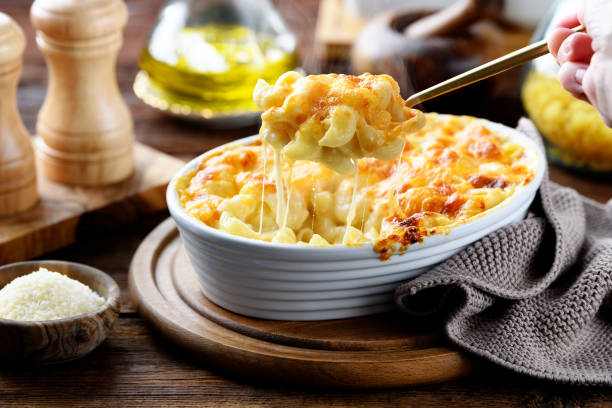

Home
My Mac and Cheese Recipe

This is the way I make mac and cheese for myself and for my girlfriend.
Ingredients
- Annie's Mac and Cheese
- Cabot Creamery Habanero Cheese
- Heavy whipping cream
- Butter
- Cayenne Pepper flakes
Instructions
- Boil Water
- Add noodles when water boiling, stir occasionally
- While noodles are cooking, grate cheese to your liking
- Prepare butter before noodles are done
- After 8-10 minutes, drain pasta
- Add shredded cheese, powdered cheese packet, a bit of cayenne pepper, butter, and a dash of heavy whipping cream
- Enjoy